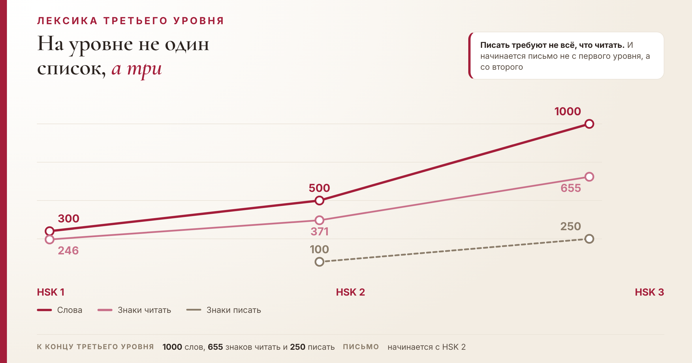
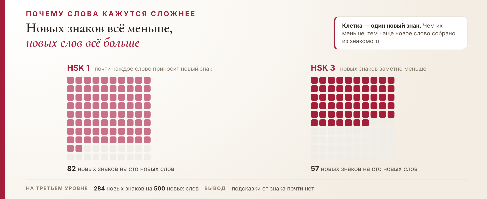

Лексика
Слова HSK 3: 500 новых слов, 284 знака и почему списков на уровне три


Запрос обычно звучит как «файл со всеми словами уровня». Файл найти можно, только на третьем уровне он закрывает примерно треть требований: кроме слов там спрашивают знаки, и спрашивают их двумя разными способами.
Разберём, что именно требует уровень, почему новые слова здесь кажутся труднее прежних и как разложить найденный список на три работы вместо одной.
Короткий ответ: сколько слов и почему списков три
Три числа и одно следствие.
Слов на уровне прибавляется 500, а накопительно к концу третьего уровня нужно знать 1000. Половина этой тысячи — лексика первых двух уровней, её вы уже проходили.
Знаков для узнавания прибавляется 284, накопительно 655. Это те знаки, которые нужно читать, но не обязательно уметь написать.
Знаков для письма от руки прибавляется 150, накопительно 250. Отдельный список, и он самый короткий из трёх.
Следствие простое: список слов — только один из трёх перечней уровня. Человек, который учит файл со словами, закрывает самый длинный из них и не трогает два других.
Три списка вместо одного
Соберу всё в таблицу, чтобы разница между тремя требованиями была видна сразу.
| Что требует уровень | Новых | Всего | Что это значит |
|---|---|---|---|
| Слова | +500 | 1000 | весь словарь уровня |
| Знаки для узнавания | +284 | 655 | их нужно читать, но не писать |
| Знаки для письма от руки | +150 | 250 | их нужно уметь написать |
Почему знаков два списка, а не один. Узнать знак в тексте и написать его по памяти — разные умения, и требования к ним разные. Читать нужно больше, писать — меньше.
Разница ощутимая: 655 знаков для чтения против 250 для письма. То есть большую часть знаков уровня достаточно узнавать.
Ещё одно, что редко замечают: число слов и число знаков считаются отдельно и совпадать не обязаны. Одно слово часто записывается двумя знаками, а один знак входит в несколько слов.
Откуда известны эти числа и почему я им верю. Они стоят в сводных таблицах действующего стандарта, и главное — сходятся между собой: прибавки знаков по трём уровням складываются в накопительные цифры без остатка, и по чтению, и по письму. Таблица, собранная из разных источников, так обычно не сходится.
Отдельно отмечу: складывать 655 и 250 не нужно. Это два требования к знакам одного уровня, измеренные по-разному — что вы должны узнавать и что должны уметь написать, — а не два набора, которые учат подряд.
Что это меняет на практике. Планировать подготовку по одному списку нельзя: даже если вы выучили все слова уровня, у вас остаются два невыполненных требования, и проверяются они разными заданиями.
Пятьсот новых слов на двести восемьдесят четыре знака
Теперь к расчёту, который объясняет, почему третий уровень ощущается тяжелее предыдущих.
Новых знаков на уровне меньше, чем новых слов: 284 против 500. В пересчёте на сотню новых слов это около 57 новых знаков.
На первом уровне соотношение было другим: 82 знака на сотню слов, то есть почти каждое слово приносило с собой новый знак. На третьем уровне такого уже нет.
Значит большая часть новых слов собрана из знаков, которые вы уже знаете. Выглядит как облегчение, а работает наоборот — и об этом следующий раздел.
Оговорю, чего из этой цифры не следует. Сказать, сколько именно слов уровня состоят только из знакомых знаков, по ней нельзя: одно слово может принести сразу два новых знака, а другое — ни одного. Доля есть, поштучного разбора нет.
Почему слова третьего уровня кажутся сложными
Жалоба на этом уровне звучит почти всегда одинаково: «знаки знакомые, а что значит — не понимаю».
Причина в арифметике выше. Когда слово собрано из знакомых знаков, подсказки от знака почти нет: вы узнаёте обе половинки, а значение целого приходится просто запомнить.
На первом уровне было проще в этом смысле: новое слово приходило с новым знаком, и знак работал меткой — увидел, вспомнил, что это новое.

Отсюда практический вывод для занятий: на третьем уровне слово нужно учить как целое, а не как сумму знаков. Разбор по частям помогает запомнить написание, но не значение.
И второе следствие, про проверку себя. Узнавание знаков перестаёт быть показателем: можно знать все знаки в строке и не понять строку. Проверять нужно понимание сочетаний, а это другое задание.
Письмо от руки: где оно начинается
Это та часть требований, о которой по спискам слов не догадаешься вообще.
| Уровень | Слов | Знаков читать | Знаков писать |
|---|---|---|---|
| HSK 1 | +300 | +246 | — |
| HSK 2 | +200 | +125 | +100 |
| HSK 3 | +500 | +284 | +150 |
На первом уровне письма от руки не требуется. Список начинается со второго: сто знаков, и ещё сто пятьдесят добавляется на третьем.
Прочерк в первой строке объясняет заодно одну путаницу. Если вам попадалась цифра «сто знаков» рядом с первым уровнем — это число второго: в сводных таблицах их легко прочитать вместе.
Что это значит для подготовки. К третьему уровню рукописных знаков набирается 250, и набираются они постепенно. Начинать тренировать руку на третьем уровне поздно: двести пятьдесят знаков за несколько недель не выучить.
Порядок черт и то, как вообще устроено письмо от руки, у нас разобрано здесь: порядок черт.
Как я проверяю список третьего уровня
Ученик прислал файл и написал: «Тут все слова третьего уровня, начинаю учить». В файле была тысяча строк, и с числом всё было в порядке — это и сбило нас обоих на первой встрече.
Мы договорились, что он берёт по сорок слов в неделю, и месяц всё шло ровно. Проблемы начались на чтении: слова он узнавал, а предложения разбирал медленнее, чем раньше.
Причина нашлась не в словах. Он читал с подсказкой, которой на экзамене не будет: в его файле рядом с иероглифами стояло чтение, и глаз привык опираться на него, а не на сам знак.
Мы убрали столбец с чтением и прогнали те же сорок слов заново. Из сорока он уверенно узнал двадцать шесть — остальные держались на пиньине.
Второе открытие было про письмо. Я попросила написать десять слов от руки, без образца. Получилось четыре. Для третьего уровня это мало: часть заданий там рукописная, и файл со словами к ней не готовит вообще.
Дальше мы поделили его список на три работы. Узнавание знака без чтения, письмо от руки по короткому набору и сами слова как сочетания — каждая со своим временем в расписании.
Через полтора месяца разрыв между «узнаю слово» и «читаю предложение» почти исчез. Слов он к тому времени знал не больше прежнего, зато знаки перестали быть для него картинками с подписью.
Вывод, который я делаю: на третьем уровне файл со словами — это ещё не подготовка, а её треть. Проверяйте себя без столбца с чтением, иначе ошибку видно только на экзамене.
Что делать с файлом «все слова уровня»
Файл — нормальная рабочая вещь, если понимать, что он даёт и чего не даёт. Три шага перед тем, как по нему заниматься.
- Сверить число позиций — в действующем словнике третьего уровня их 1000 вместе с младшими уровнями.
- Отделить новые слова от прежних — новых на этом уровне 500, остальное вы уже проходили.
- Разметить знаки — в файле со словами знаков нет, а их на уровне два разных списка.
Про первый шаг. В файлах встречаются обе цифры — и тысяча, и пятьсот: одни составители кладут весь накопительный словарь, другие только прибавку уровня. Обе версии правильные, но планировать по ним нужно по-разному.
Про второй. Если в файле тысяча строк, половина из них — повторение. Проходить их подряд значит тратить время занятий на знакомое; полезнее отметить, что узнаёте мгновенно, и работать с остатком.
Про третий. Знаков в файле со словами нет как отдельной величины, и это главный его пробел. Выпишите из своего остатка знаки, которые видите впервые, — получится ваш личный список для узнавания, а из него уже короткий набор для письма.
Отдельно скажу про столбец с чтением. Он удобен, пока вы учите, и вреден, когда проверяете: глаз читает пиньинь вместо знака, и вы запоминаете слово с подсказкой, которой на экзамене не будет.
Как это проверить за минуту: закройте столбец с чтением и пройдите двадцать слов. Разница между «узнал» и «вспомнил» обычно видна сразу.
Девяносто шесть новых конструкций
Рядом с лексикой на уровне стоит перечень грамматических пунктов, и новых на третьем уровне 96.
Называю это число по одной причине: часть новых слов работает только внутри конструкции. Служебные элементы, оформители результата действия и показатели сравнения в списке слов выглядят как обычные позиции, а учить их отдельно от схемы бесполезно.
Какие именно конструкции проходят на этом уровне и как они устроены, у нас разобрано в статье про экзамен третьего уровня: HSK 3: как сдать без пиньиня. Проверить себя на заданиях можно на пробнике: пробный тест HSK 3.
Чего я не подтвердила
Одно число по этому уровню я называть не стану.
Накопительное число грамматических пунктов. Прибавка в 96 сошлась везде, а вот сумма по трём уровням в источниках разная: в одних сводках стоит одна цифра, в других другая, и разница заметная.
Поскольку сводки в остальном совпадают, расхождение похоже на разный способ счёта — но проверить это по открытым данным я не смогла и подставлять одно из двух значений не буду.
На подготовку это почти не влияет: заниматься вы будете по прибавке уровня, а не по накопительной сумме. А вот числам по словам и знакам можно верить увереннее: там прибавки складываются в накопительные цифры без остатка, и сводки сходятся между собой.
Шестьсот и тысяча: одно замечание
Списки на 600 слов для третьего уровня попадаются до сих пор. Это не брак и не подделка: такую цифру задавал прежний стандарт, и составители её честно переписывали.
Готовиться по короткому списку сегодня не выйдет: в нём нет четырёхсот позиций действующего словника. Как отличить устаревший список от действующего и откуда берутся ещё и завышенные цифры, разобрано у нас в статье про слова по уровням.
Быстрая проверка та же, что и на младших уровнях: посчитайте позиции. Тысяча — действующая цифра, шестьсот — прежняя.
И что делать, если вы уже прошли половину по короткому списку. Бросать его посреди уровня не нужно: базовая лексика в действующем словнике осталась на месте. Разумнее досчитать до конца по своему списку, а потом сверить его с действующим и взять разницу отдельным набором.
Сверять лучше по числам, а не на глаз: шестьсот против тысячи — разница в четыреста позиций, и примерно столько же слов вам предстоит выучить сверх пройденного.
Про устройство самого словника — почему слова в нём идут по алфавиту и почему тематических разделов в нём нет — написано в нашей статье про слова первого уровня. На третьем уровне всё устроено так же.
Частые ошибки
- Считать файл со словами всей подготовкой. Это один список из трёх.
- Проверять себя со столбцом чтения. Глаз опирается на пиньинь вместо знака.
- Учить слово как сумму знаков. На этом уровне значение у сочетания своё.
- Откладывать письмо от руки до третьего уровня. Знаки копятся со второго.
- Не смотреть, тысяча в списке или пятьсот. Это накопительная цифра и прибавка.
Застряли между «узнаю слово» и «читаю предложение»? На пробном занятии мы проверяем узнавание знаков без подсказки и считаем, какая часть вашего списка держится на пиньине.
Приходите на пробное занятие, форматы и программа — здесь: онлайн-курсы китайского.
Одно упражнение на сегодня: закройте в своём списке столбец с чтением и пройдите двадцать слов подряд. Сколько из двадцати вы узнали по самому знаку — столько и выучено по-настоящему.
Чего в статье нет намеренно
- Самих списков — ни слов, ни знаков. Блог их не перепечатывает.
- Накопительного числа грамматических пунктов. Источники расходятся.
- Имён приложений, сервисов и файлов. На внешние ресурсы блог не ссылается.
- Полных таблиц по девяти уровням. Это предмет отдельной статьи.
- Разбора самих конструкций уровня. Тоже отдельная статья.
И ещё об одном умолчании. Я не говорю, сколько именно слов уровня состоят из знакомых знаков: из доли новых знаков такой вывод не следует, а считать поштучно по словнику я не бралась.
Частые вопросы (FAQ)
Сколько слов нужно на HSK 3 сейчас?
Тысяча накопительно, из них пятьсот новых на самом уровне. Цифра тысяча включает лексику первых двух уровней, поэтому учить с нуля придётся только половину списка.
Хватит ли выучить список слов?
Нет, и это главное отличие третьего уровня от младших. Кроме слов в требованиях стоят два списка знаков: двести восемьдесят четыре новых для узнавания и сто пятьдесят новых для письма от руки. Файл со словами ни одного из них не закрывает.
Сколько иероглифов нужно знать на третьем уровне?
Для узнавания — шестьсот пятьдесят пять накопительно, из них двести восемьдесят четыре добавляются на самом уровне. Эти числа сошлись у меня в нескольких сводных таблицах стандарта и складываются с цифрами младших уровней без остатка.
Сколько знаков нужно уметь написать от руки?
Двести пятьдесят накопительно: сто приходит на втором уровне, ещё сто пятьдесят на третьем. На первом уровне письма от руки не требуется вовсе — список начинается со второго.
Почему слова третьего уровня кажутся труднее, чем на втором?
Потому что новых знаков в них мало: на сто новых слов приходится около пятидесяти семи новых знаков, а на первом уровне было восемьдесят два. Знаки в новом слове чаще знакомые, а значение у сочетания своё, и догадаться по знакам удаётся не всегда.
Чем отличается список на 600 слов от списка на 1000?
Стандартом, по которому он собран: шестьсот — прежняя шкала, тысяча — действующая. Короткий список не испорчен, он просто старый, и для подготовки по новым правилам его не хватит.
И напоследок то, что кажется мне важнее частных ответов. Третий уровень — первый, где подготовка перестаёт быть одним списком: слова, узнавание знаков и письмо расходятся в три разные работы, и каждая требует своего времени в расписании. Чем раньше вы их разделите, тем меньше неприятных открытий останется на последние недели.
Источники
- Прибавка и накопительные числа слов, знаков для узнавания и знаков для письма взяты из сводных таблиц действующего стандарта; эти таблицы я сверила в нескольких независимых источниках.
- Главный довод в пользу этих чисел — их сходимость: прибавки знаков по трём уровням складываются в накопительные цифры без остатка.
- Отсутствие требования писать от руки на первом уровне приведено по тем же таблицам.
- Число новых грамматических пунктов сошлось в проверках; накопительную сумму не привожу — источники дают разные значения.
- Сколько новых знаков приходится на сотню новых слов — это я посчитала сама из приведённых выше чисел; в источниках такой величины нет.
- Прежнее требование в шестьсот слов названо по описаниям прежнего стандарта, частью уже разобранным в блоге.
- Ни словник, ни списки знаков в статье не воспроизводятся; сервисы и приложения я по именам не называю и ссылок на них не даю.
- Случай с файлом на тысячу строк взят из занятий Kitai School; имя ученика не привожу.